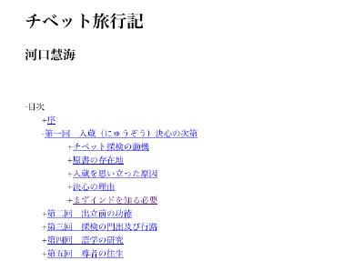

見出し
見出しは、次のように注記してください。
通常の見出し
下の組版画像のように、見出しが行として独立しているものを、ここでは通常の見出しと呼びます。
通常の見出しは、次の要領で注記してください。
見出し注記には、「大見出し」、「中見出し」、「小見出し」の、三つのレベルを設けます。
作品中に一つのレベルの見出しだけが使われている場合は、○○［＃「○○」は中見出し］と注記してください。
二つのレベルの見出しが使われている場合は、大中を用いて、大きなレベルを○○［＃「○○」は大見出し］、小さなレベルを、○○［＃「○○」は中見出し］と注記してください。
三つのレベルの見出しが使われている場合は、大中小を用いて、大きなレベルを○○［＃「○○」は大見出し］、中のレベルを○○［＃「○○」は中見出し］、小さなレベルを○○［＃「○○」は小見出し］と注記してください。
三つ以上のレベルの見出しが使われている場合は、大きなレベルから○○［＃「○○」は大見出し］、○○［＃「○○」は中見出し］、○○［＃「○○」は小見出し］と注記し、それ以下のレベルの見出しは注記しないでください。
その上で、「※小見出しよりもさらに下位の見出しには、注記しませんでした。」のようにファイル末に書き入れてください。
見出しのルビは、注記対象文字の後に置く、前方参照型の見出し注記には含めません。○○《まるまる》［＃「○○《まるまる》」は中見出し］ではなく、○○《まるまる》［＃「○○」は中見出し］のように書いてください。
※記入例の下に、テキスト版をスクリプトで変換して得た、XHTML 版のタグを示します。
独《ひと》り寝《ね》の別《わか》れ［＃「独り寝の別れ」は大見出し］
<h3 class="o-midashi"><a class="midashi_anchor" id="midashi460"><ruby><rb>独</rb><rp>（</rp><rt>ひと</rt><rp>）</rp></ruby>り<ruby><rb>寝</rb><rp>（</rp><rt>ね</rt><rp>）</rp></ruby>の<ruby><rb>別</rb><rp>（</rp><rt>わか</rt><rp>）</rp></ruby>れ</a></h3>
見出しが字下げされている場合は、［＃○字下げ］の記法で注記してください。
記入例
［＃２字下げ］上 先生と私［＃「上 先生と私」は大見出し］
［＃５字下げ］一［＃「一」は中見出し］
私《わたくし》はその人を常に先生と呼んでいた。だからここでもただ先生と書くだけで本名は打ち明けない。これは世間を憚《はば》かる遠慮というよりも、その方が私にとって自然だからである。私はその人の記憶を呼び起すごとに、すぐ「先生」といいたくなる。筆を執《と》っても心持は同じ事である。よそよそしい頭文字《かしらもじ》などはとても使う気にならない。
<div class="jisage_2" style="margin-left: 2em"><h3 class="o-midashi"><a class="midashi_anchor" id="midashi560">上 先生と私</a></h3></div>
<br />
<br />
<div class="jisage_5" style="margin-left: 5em"><h4 class="naka-midashi"><a class="midashi_anchor" id="midashi570">一</a></h4></div>
<br />
<ruby><rb>私</rb><rp>（</rp><rt>わたくし</rt><rp>）</rp></ruby>はその人を常に先生と呼んでいた。だからここでもただ先生と書くだけで本名は打ち明けない。これは世間を<ruby><rb>憚</rb><rp>（</rp><rt>はば</rt><rp>）</rp></ruby>かる遠慮というよりも、その方が私にとって自然だからである。私はその人の記憶を呼び起すごとに、すぐ「先生」といいたくなる。筆を<ruby><rb>執</rb><rp>（</rp><rt>と</rt><rp>）</rp></ruby>っても心持は同じ事である。よそよそしい<ruby><rb>頭文字</rb><rp>（</rp><rt>かしらもじ</rt><rp>）</rp></ruby>などはとても使う気にならない。<br />
●通常の見出しの例。夏目漱石「こころ」集英社文庫、集英社、1998（平成10）年6月27日第18刷、6ページ
指定範囲が長めになるときは、見出しの始まりと終わりを特定する、開始／終了型の書き方で、次のように注記してください。
［＃大見出し］○○○○○○○○○○［＃大見出し終わり］
<h3 class="o-midashi"><a class="midashi_anchor" id="midashi670">○○○○○○○○○○</a></h3>［＃中見出し］○○○○○○○○○○［＃中見出し終わり］
<h4 class="naka-midashi"><a class="midashi_anchor" id="midashi680">○○○○○○○○○○</a></h4>［＃小見出し］○○○○○○○○○○［＃小見出し終わり］
<h5 class="ko-midashi"><a class="midashi_anchor" id="midashi681">○○○○○○○○○○</a></h5>
指定範囲に外字注記が含まれるとき、前方参照型では期待通りに変換されないときも、開始／終了型で次のように書いてください。
［＃中見出し］※［＃ローマ数字1、1-13-21］［＃中見出し終わり］
<h4 class="naka-midashi"><a class="midashi_anchor" id="midashi691"><img src="../../../gaiji/1-13/1-13-21.png" alt="※(ローマ数字1、1-13-21)" class="gaiji" /></a></h4>
開始／終了型の注記では、ルビの付いた見出しもそのまま挟んでしまってかまいません。
［＃中見出し］亜細亜《アジア》の曙《あけぼの》［＃中見出し終わり］
<h4 class="naka-midashi"><a class="midashi_anchor" id="midashi701"><ruby><rb>亜細亜</rb><rp>（</rp><rt>アジア</rt><rp>）</rp></ruby>の<ruby><rb>曙</rb><rp>（</rp><rt>あけぼの</rt><rp>）</rp></ruby></a></h4>
見出しが複数行に渡っているときは、次のように注記してください。
［＃ここから大見出し］
○○○○○○○○○○
○○○○○○○○○○
［＃ここで大見出し終わり］
<h3 class="o-midashi"><a class="midashi_anchor" id="midashi801">
○○○○○○○○○○<br />
○○○○○○○○○○<br />
</a></h3>［＃ここから中見出し］
○○○○○○○○○○
○○○○○○○○○○
［＃ここで中見出し終わり］
<h4 class="naka-midashi"><a class="midashi_anchor" id="midashi811">
○○○○○○○○○○<br />
○○○○○○○○○○<br />
</a></h4>［＃ここから小見出し］
○○○○○○○○○○
○○○○○○○○○○
［＃ここで小見出し終わり］
<h5 class="ko-midashi"><a class="midashi_anchor" id="midashi812">
○○○○○○○○○○<br />
○○○○○○○○○○<br />
</a></h5>
複数行にわたる見出しが字下げされているときは、ブロックの字下げの記法と組み合わせて、次のように書いてください。
［＃ここから○字下げ］
［＃ここから中見出し］
○○○○○○○○○○
○○○○○○○○○○
［＃ここで中見出し終わり］
［＃ここで字下げ終わり］
<div class="jisage_" style="margin-left: em">
<h4 class="naka-midashi"><a class="midashi_anchor" id="midashi822">
○○○○○○○○○○<br />
○○○○○○○○○○<br />
</a></h4>
</div>
数字のみからなる見出しは、注記してください。
「★」などの、記号のみからなるものは、注記しないでください。
同行見出し
見出しの下に、本文が改行なしで続く形を、同行見出しと呼びます。
同行見出しの注記にも、大中小の三つのレベルを設けます。
作品中で中のレベルの見出しがこの形式で組まれている場合は、次のように注記してください。
○○○○○［＃「○○○○○」は同行中見出し］
<h4 class="dogyo-naka-midashi"><a class="midashi_anchor" id="midashi832">○○○○○</a></h4>
大または小のレベルの見出しがこの形式で組まれている場合は、次のように注記してください。
○○○○○［＃「○○○○○」は同行大見出し］
<h3 class="dogyo-o-midashi"><a class="midashi_anchor" id="midashi932">○○○○○</a></h3>○○○○○［＃「○○○○○」は同行小見出し］
<h5 class="dogyo-ko-midashi"><a class="midashi_anchor" id="midashi933">○○○○○</a></h5>
同行見出しのルビは、前方参照型の見出し注記には含めません。
青空文庫《あおぞらぶんこ》［＃「青空文庫」は同行中見出し］
<h4 class="dogyo-naka-midashi"><a class="midashi_anchor" id="midashi943"><ruby><rb>青空文庫</rb><rp>（</rp><rt>あおぞらぶんこ</rt><rp>）</rp></ruby></a></h4>
記入例：
…此考《このかんがへ》がつまり
入藏《にゆうぞう》を思《おも》ひ立ツた原因《げんいん》［＃「入藏を思ひ立ツた原因」は同行中見出し］ でありまして丁度《てうど》其時《そのとき》が明治二十六年の四月で今《いま》より滿《まん》十年餘《ねんよ》以前《いぜん》のことで御座り升けれども西藏は嚴密に鎖國主義を實行して居る國で…
…<ruby><rb>此考</rb><rp>（</rp><rt>このかんがへ</rt><rp>）</rp></ruby>がつまり<br />
<h4 class="dogyo-naka-midashi"><a class="midashi_anchor" id="midashi953"><ruby><rb>入藏</rb><rp>（</rp><rt>にゆうぞう</rt><rp>）</rp></ruby>を<ruby><rb>思</rb><rp>（</rp><rt>おも</rt><rp>）</rp></ruby>ひ立ツた<ruby><rb>原因</rb><rp>（</rp><rt>げんいん</rt><rp>）</rp></ruby></a></h4> でありまして<ruby><rb>丁度</rb><rp>（</rp><rt>てうど</rt><rp>）</rp></ruby><ruby><rb>其時</rb><rp>（</rp><rt>そのとき</rt><rp>）</rp></ruby>が明治二十六年の四月で<ruby><rb>今</rb><rp>（</rp><rt>いま</rt><rp>）</rp></ruby>より<ruby><rb>滿</rb><rp>（</rp><rt>まん</rt><rp>）</rp></ruby><ruby><rb>十年餘</rb><rp>（</rp><rt>ねんよ</rt><rp>）</rp></ruby><ruby><rb>以前</rb><rp>（</rp><rt>いぜん</rt><rp>）</rp></ruby>のことで御座り升けれども西藏は嚴密に鎖國主義を實行して居る國で…
●同行見出しの例。河口慧海「西藏旅行記上卷」博文館、1904（明治37）年5月14日初版、2ページ
指定範囲が長めになるときは、開始／終了型で次のように注記してください。
指定範囲に外字注記が含まれるとき、前方参照型では期待通りに変換されないときも、開始／終了型で書いてください。
［＃同行大見出し］○○○○○［＃同行大見出し終わり］
<h3 class="dogyo-o-midashi"><a class="midashi_anchor" id="midashi1043">○○○○○</a></h3>［＃同行中見出し］○○○○○［＃同行中見出し終わり］
<h4 class="dogyo-naka-midashi"><a class="midashi_anchor" id="midashi1053">○○○○○</a></h4>［＃同行小見出し］○○○○○［＃同行小見出し終わり］
<h5 class="dogyo-ko-midashi"><a class="midashi_anchor" id="midashi1054">○○○○○</a></h5>
同行見出しが字下げされている場合は、［＃○字下げ］の記法で注記してください。
窓見出し
同行見出しが複数行にわたり、見出しの下に複数行の本文が組まれる形を、窓見出しと呼びます。
窓見出しの注記にも、大中小の三つのレベルを設けます。
作品中で中のレベルの見出しがこの形式で組まれている場合は、次のように注記してください。
○○○○○［＃「○○○○○」は窓中見出し］
<h4 class="mado-naka-midashi"><a class="midashi_anchor" id="midashi1064">○○○○○</a></h4>
大または小のレベルの見出しがこの形式で組まれている場合は、次のように注記してください。
○○○○○［＃「○○○○○」は窓大見出し］
<h3 class="mado-o-midashi"><a class="midashi_anchor" id="midashi1164">○○○○○</a></h3>○○○○○［＃「○○○○○」は窓小見出し］
<h5 class="mado-ko-midashi"><a class="midashi_anchor" id="midashi1165">○○○○○</a></h5>
窓見出しのルビは、前方参照型の見出し注記には含めません。
青空文庫《あおぞらぶんこ》［＃「青空文庫」は窓中見出し］
<h4 class="mado-naka-midashi"><a class="midashi_anchor" id="midashi1175"><ruby><rb>青空文庫</rb><rp>（</rp><rt>あおぞらぶんこ</rt><rp>）</rp></ruby></a></h4>
窓見出しが字下げされている場合は、［＃○字下げ］の記法で注記してください。
記入例：
…凡廿五六丁にして波荒くなり來りける。
［＃１字下げ］龍王岬［＃「龍王岬」は窓中見出し］ 峨々たる岩岬海中に兀出す。一歩として上らるゝ場にあらず。怪松五六株（繁）茂セり。又此岬より貳三丁隔て、又海中ニ磊々たる嚴石疊上たる小じま有。是を則 龍王嶋［＃「龍王嶋」は窓中見出し］ と云り。松の樹六七株。高凡五六丈。…
…凡廿五六丁にして波荒くなり來りける。<br />
<div class="jisage_1" style="margin-left: 1em"><h4 class="mado-naka-midashi"><a class="midashi_anchor" id="midashi1185">龍王岬</a></h4> 峨々たる岩岬海中に兀出す。一歩として上らるゝ場にあらず。怪松五六株（繁）茂セり。又此岬より貳三丁隔て、又海中ニ磊々たる嚴石疊上たる小じま有。是を則 <h4 class="mado-naka-midashi"><a class="midashi_anchor" id="midashi1195">龍王嶋</a></h4> と云り。松の樹六七株。高凡五六丈。…</div>
●窓見出しの例。松浦武四郎「松浦武四郎紀行集 （上）」冨山房、1975（昭和50）年10月28日第1刷、468ページ
指定範囲が長めになるときは、開始／終了型で次のように注記してください。
指定範囲に外字注記が含まれるとき、前方参照型では期待通りに変換されないときも、開始／終了型で書いてください。
［＃窓大見出し］○○○○○［＃窓大見出し終わり］
h3 class="mado-o-midashi"><a class="midashi_anchor" id="midashi1295">○○○○○</a></h3>［＃窓中見出し］○○○○○［＃窓中見出し終わり］
<h4 class="mado-naka-midashi"><a class="midashi_anchor" id="midashi1305">○○○○○</a></h4>［＃窓小見出し］○○○○○［＃窓小見出し終わり］
<h5 class="mado-ko-midashi"><a class="midashi_anchor" id="midashi1306">○○○○○</a></h5>
窓見出しが何行分とるかは、注記には記載しません。３行以上とっている際は、ファイル末に、「※窓見出しは、○行どりです。」と書いてください。（２行どりの際は、注記の必要はありません。）
見出しの形式とレベル
「通常の見出し」「同行見出し」「窓見出し」は、見出しの形式を表す指標です。
一方の「大中小」は、見出しのレベルの指標です。
底本によっては、大中のレベルは通常の見出し、小のみが同行見出しといった例がみられます。
そんなときは、大中を通常の見出しの形式で、小を同行見出しの形式で注記してください。
目次
テキスト版の見出し注記を、XHTML 版作成プログラムは、見出しタグに変換します。
青空文庫が用意した contents.js と名付けた Java Script は、XHTML 版が開かるたびに、ファイル中の見出しタグを拾って、リンク付きの目次を生成し、表示します。

それぞれの見出しの頭に付いている「+」「-」のクリックで、より下の階層を開いたり閉じたりできます。
本文中の見出しを収集して構成したこの目次は、底本に掲載されているものとは、細部が異なる場合があります。